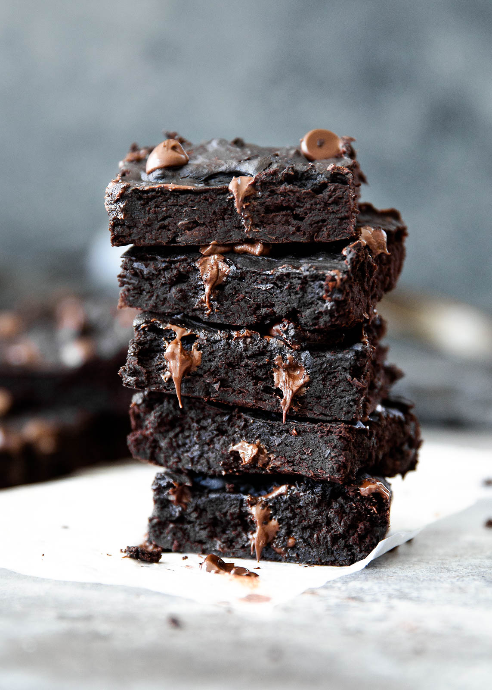

Black Bean Brownies

Description
Outstanding flourless healthy black bean brownies made with avocado instead of butter! This dairy free and gluten free treat is surprisingly delicious and even fools kids.
Ingredients
- 1 (15 oz) can of black beans, rinsed and drained
- 2 eggs or flax eggs (add an additional egg if you like cakier brownies!)
- 1/2 of a large ripe avocado
- 1 tablespoon melted coconut oil
- 1/2 cup unsweetened cocoa powder plus 1 tablespoon
- 1/2 teaspoon baking powder
- 1/4 teaspoon baking soda
- 1/4 teaspoon salt
- 1 teaspoons pure vanilla extract
- 2/3 cup coconut sugar or sub brown sugar (or sub 1/2 cup pure maple syrup)
- 1/3 cup chocolate chips + 2 tablespoons for topping
Steps
- Preheat oven to 350 degrees F. Grease a 8x8 inch baking pan.
- Place all ingredients besides chocolate chips into blender or food processor. Process or puree until ingredients form a smooth batter. If the batter is WAY too thick and won't process then add in a teaspoon or two of water. This batter needs to be very thick in order to produce fudgy brownies.
- Add in 1/3 cup chocolate chips and fold into batter.
- Pour batter into prepared pan, sprinkle with 2 tablespoons of remaining chocolate chips. You can also fold in nuts or swirl in peanut butter.
- Bake for 25-35 minutes or until knife inserted in center comes out somewhat clean and top of the brownies begin to crack. Cool pan completely on wire rack then cut into 12 delicious large brownies!